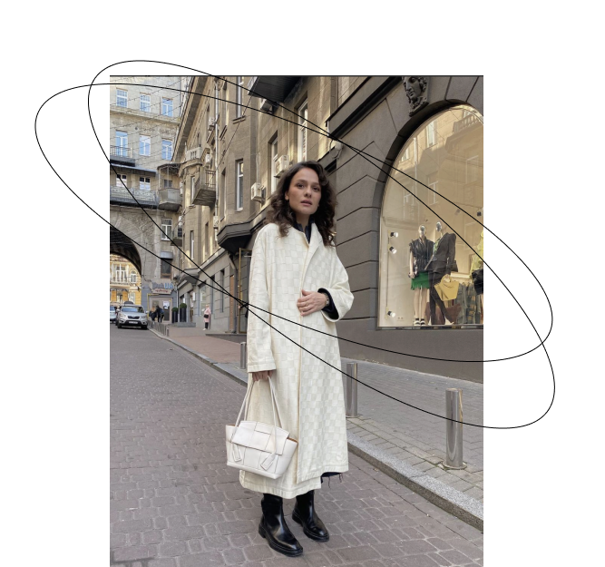

стилист
Профессия мечты
who is stylist who is stylist who is stylist
who is stylist who is stylist who is stylist
Кто такой персональный стилист
Персональный стилист — это специалист, который работает над личным стилем клиента, подбирает одежду и аксессуары и составляет гармоничные образы на любой случай жизни.
навыки, необходимые стилисту
Находить язык с клиентами
Подбирать цвета
Корректировать пропорции
Составлять комплекты и капсулы
Корректировать пропорции
Разбирать гардероб клиента
Сопровождать клиента на шопинге
Продвигать личный бренд
Эффективно организовывать работу
стилисты, которые вдохновляют
Рита мурадова
greenteanosugar
Персональный стилист
с восьмилетним опытом работы, автор популярного YouTube-канала о моде.
Александр рогов
alexandrrogov
Александр Рогов – российский дизайнер и стилист, ведущий популярных телевизионных проектов.
За пятнадцать лет ему удалось построить головокружительную карьеру и стать одним из ведущих экспертов моды на постсоветском пространстве.
мэйв рейли
stylememaeve
Cреди клиентов которой числятся Хейли Бибер, Жанель Монэ, Крис Дженнер и Деми Ловато.
Недавно она также начала стилизовать образы Меган Фокс, и теперь мы чаще видим актрису в модных хрониках.
be a stylist be a stylist be a stylist